0244 – Steps and their functions look different (prototype, steps 4 and 5)
All pictures are the real app (Blender 5.2.3 on the 4-core web test machine without a graphics card, a virtual screen, UI scale 100 %), with the test crane – nothing of yours. Nothing here is in the app yet: this is the prototype on its own branch. Pick at the bottom, press Copy and paste the line to the lead.
1 · Step 4 open, its functions closed
Left today, middle your pick (lighter step bar with a green edge, functions darker and indented, green arrows), right the same without the green line (no overlay: the step bar in a box as today, green arrows, indents).
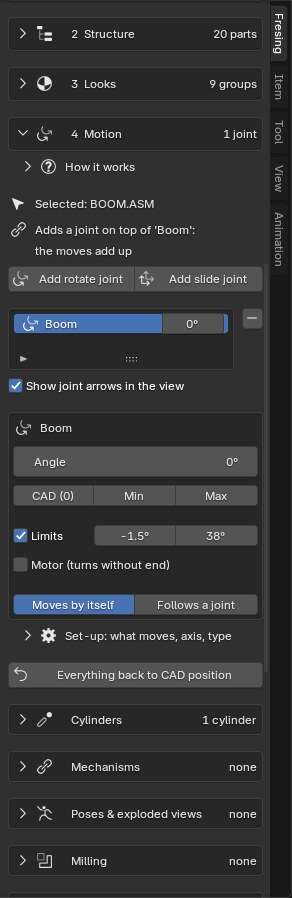
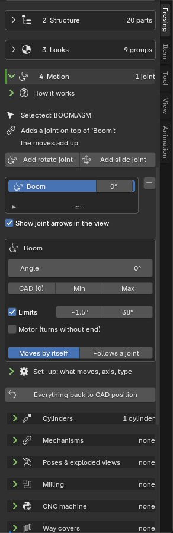
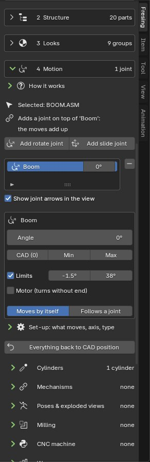
2 · Cylinders open, its Set-up fold open
The open function sits in a frame (1 px #575757) with a 3 px Fresing Green line on its left. The fold inside it (Set-up) has a green arrow, no frame, its body indented with a thin dashed line.
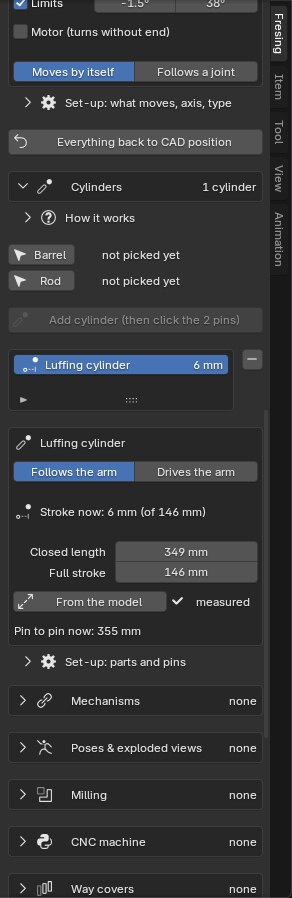
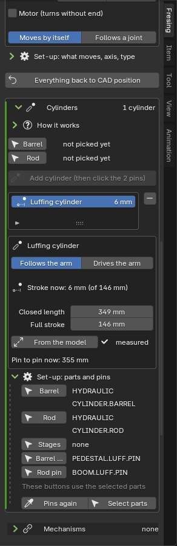
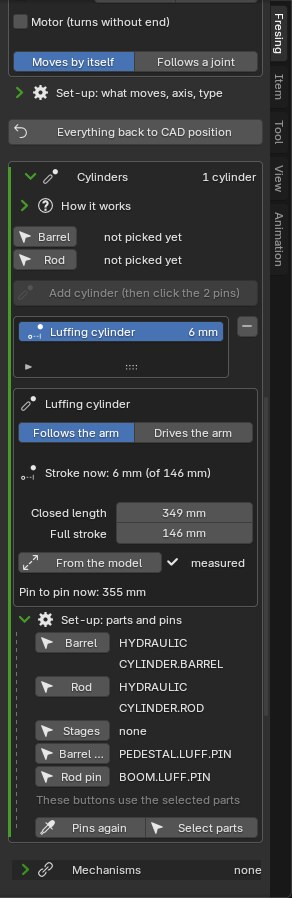
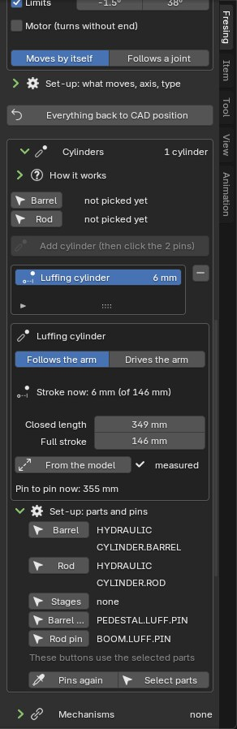
3 · Step 5 Scene & Render
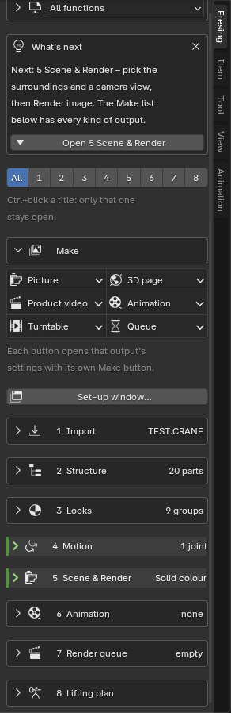
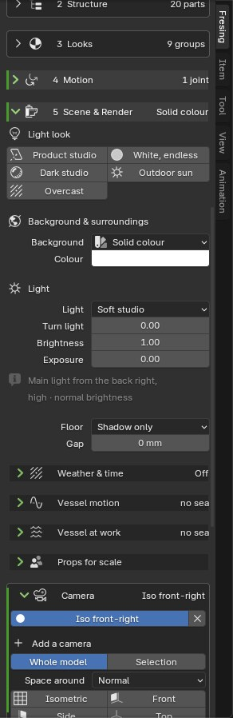
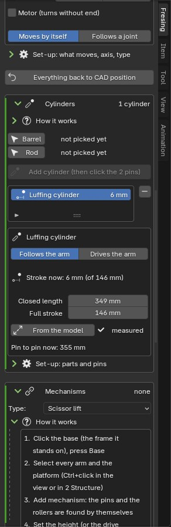
4 · The whole window, 2560 px and 200 %
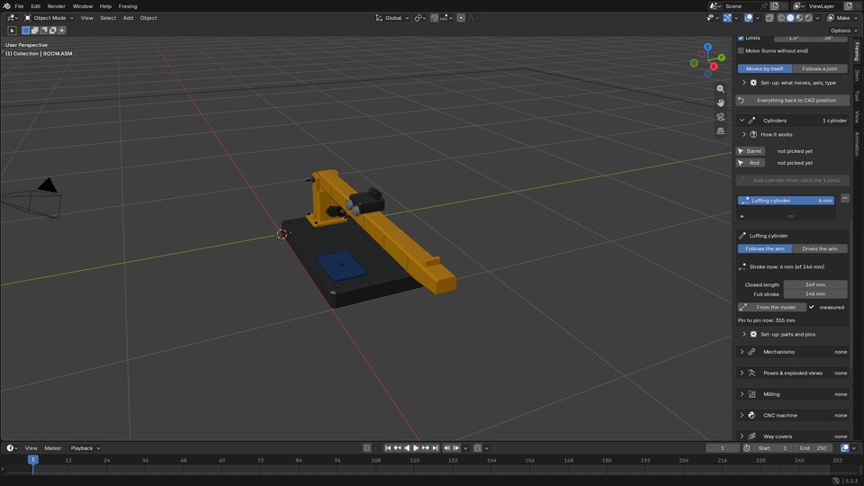
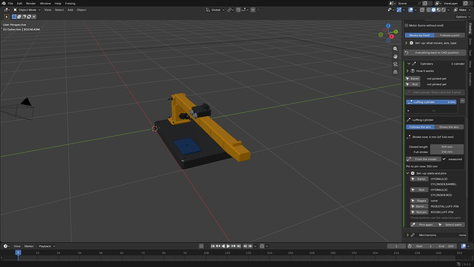
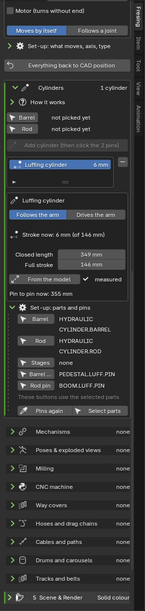
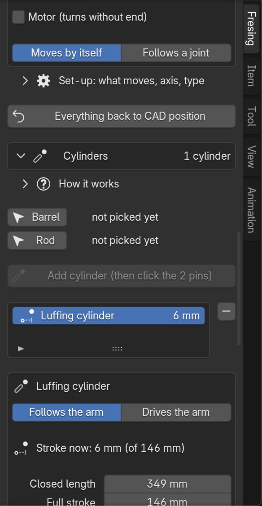
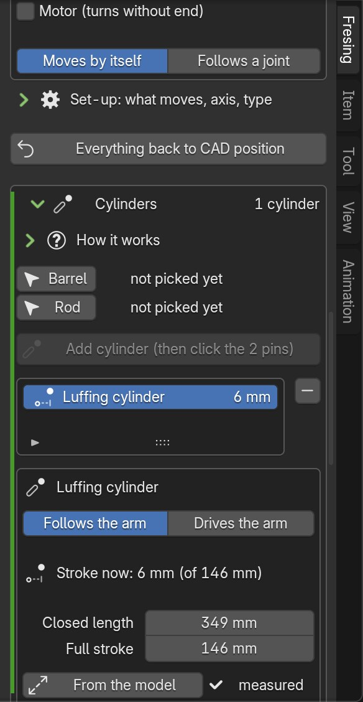
5 · "Show all of Blender" (Full access) with the new greys
The only Blender colour setting the new look changes is the outline of every box (#3d3d3d → #575757), so it also shows on Blender's own panels in Outliner and Properties. Blender's panel colours (lighter / darker panel backgrounds) do nothing in the Fresing tab – the last picture paints them red, green and blue to prove it: only Blender's own Properties panels change.
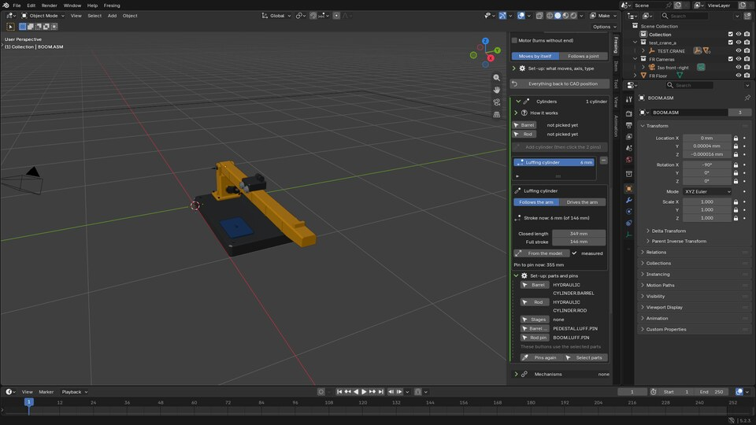
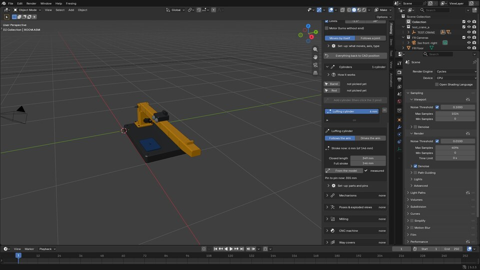
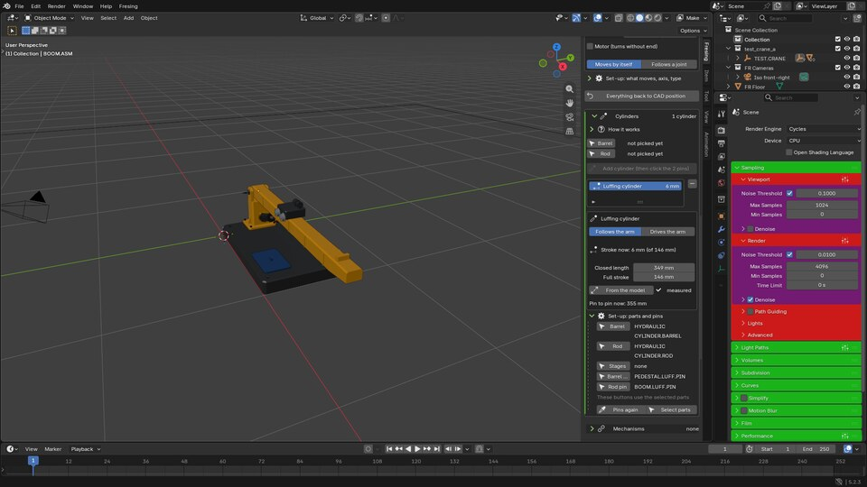
6 · Two other ways I tried (not recommended)
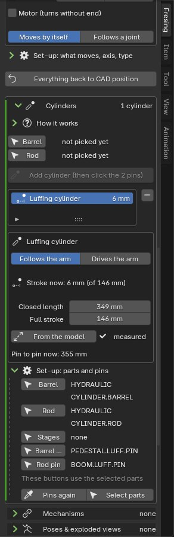
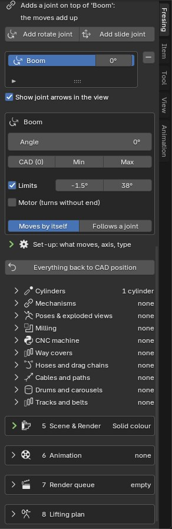
7 · What the green line costs
Measured on the 4-core web machine with the real Blender 5.2.3 (software drawing, no graphics card), median of 2 rounds of 30 redraws of the side panel. Blender cannot colour one row, so the lighter bar, the darker rows and the green lines are drawn over the side panel after Blender drew it: the app reads the panel's pixels to find where the rows are. Reading only a narrow strip on the left is the cheap way.
| Look | Open functions | 1920: side panel redraw | of it: the green line | 2560: side panel redraw | of it: the green line |
|---|---|---|---|---|---|
| Today | 0 | 1.1 ms | – | 0.9 ms | – |
| Today | 1 | 1.1 ms | – | 1.1 ms | – |
| Today | 3 | 1.1 ms | – | 1.0 ms | – |
| New look without the green line (fallback) | 0 | 0.9 ms | – | 1.0 ms | – |
| New look without the green line (fallback) | 1 | 1.0 ms | – | 1.1 ms | – |
| New look without the green line (fallback) | 3 | 0.8 ms | – | 1.1 ms | – |
| New look, green line – reads a 80 px strip | 0 | 1.7 ms | 1.1 ms | 2.0 ms | 1.3 ms |
| New look, green line – reads a 80 px strip | 1 | 1.8 ms | 1.3 ms | 2.0 ms | 1.6 ms |
| New look, green line – reads a 80 px strip | 3 | 1.9 ms | 1.3 ms | 2.2 ms | 1.8 ms |
| New look, green line – reads the whole panel | 0 | 3.1 ms | 2.5 ms | 3.7 ms | 2.9 ms |
| New look, green line – reads the whole panel | 1 | 3.0 ms | 3.4 ms | 3.7 ms | 3.8 ms |
| New look, green line – reads the whole panel | 3 | 3.1 ms | 2.7 ms | 4.7 ms | 4.0 ms |
Scrolling and dragging a joint cost the same per redraw (the overlay does not depend on what changed). Your PC with its graphics card draws faster; the extra stays about 1 ms per redraw of the side panel, which only redraws when something in it changes.
8 · Your choices